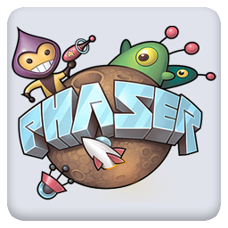

Mission Bit is a non-profit organization trying to eliminate the tech divide in San Francisco by offering free programming classes to SFUSD students. With an emphasis on project based learning, we move towards creating a final project that showcases both the skills developed over the course of the semester and a practical representation of what those skills can become.
Over the course of this semester we will learn how to utilize:

HTML, the language of the internet.
CSS, a basic way to improve the presentation of a website.
JavaScript, the default programming language of the internet.
And Phaser, a JavaScript game framework.
By the end of the semester, all these skills will culminate in a final group project. Examples from last semester can be found here.